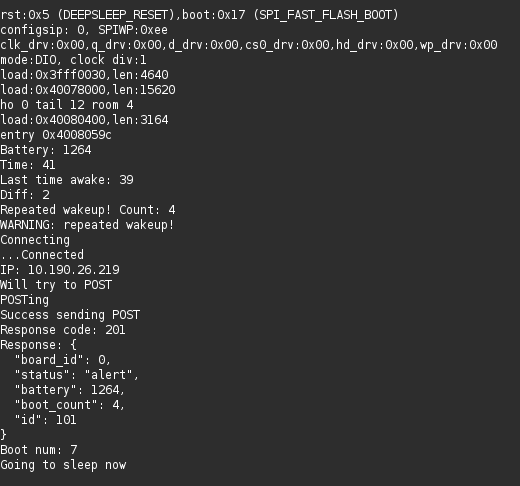
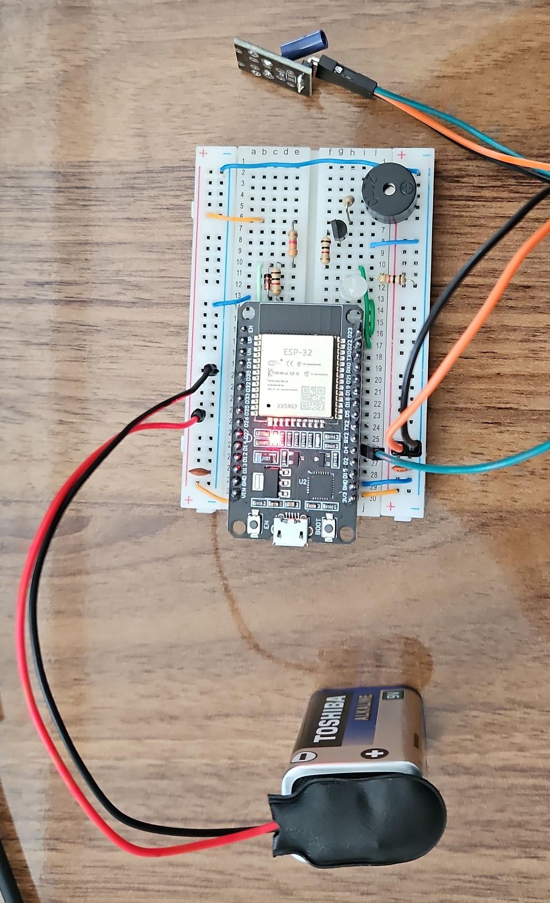

Foi possível implementar uma lógica inicial para o fluxo após o acordamento do microcontrolador com base no diagrama da proposta. Dessa forma, foi possível acionar um buzzer após acordamento e se conectar a uma rede Wi-Fi para enviar um JSON através de uma requisição HTTP com o método POST.
Foi utilizado o site JSONPlaceholder para facilitar a visualização do JSON enviado sem subir um servidor próprio.
Alguns parâmetros fixos foram especificados no código, como:

Foi discutido qual tipo de bateria seria mais apropriada para ser utilizada e como seria melhor para medir seu nível. A sugestão do professor foi utilizar baterias de lítio em vez de alcalinas, mas ainda foi possível definir qual utilizaremos. Cogita-se utilizar baterias de caixas de fones de ouvidor se fore viáveis.
Ele também sugeriu fazer a medição com uma leitura analógica de um divisor de tensão e também adicionar um diodo zener em paralelo com o resistor cuja tensão será medida para garantir que o pino do microcontrolador não receba acima de 3.3V. Isso foi implementado com sucesso utilizando um resistor de 1k em paralelo com o diodo e em série com um de 3.3k. Esses valores foram escolhidos porque a bateria de teste foi uma alcalina de 9V, sendo então adequado medir o valor de aproximadamente 1/3 da tensão da bateria. Mas eles irão mudar conforme a bateria que for escolhida.
